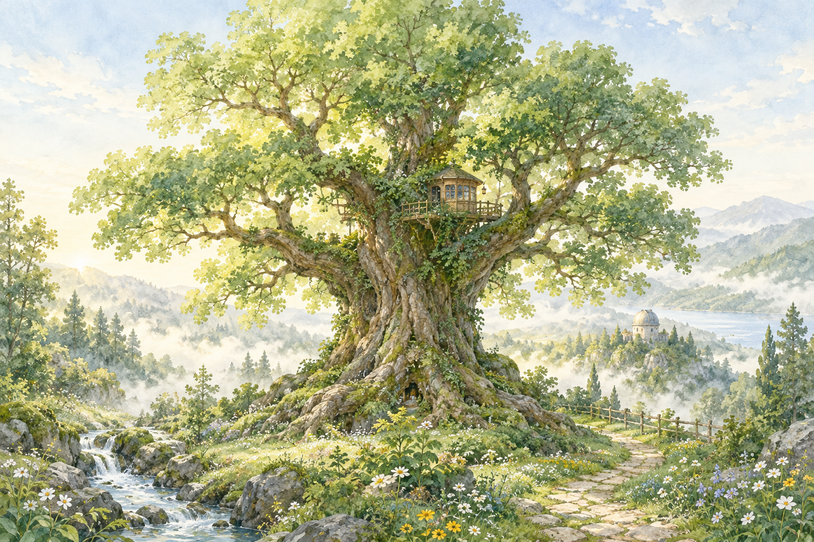
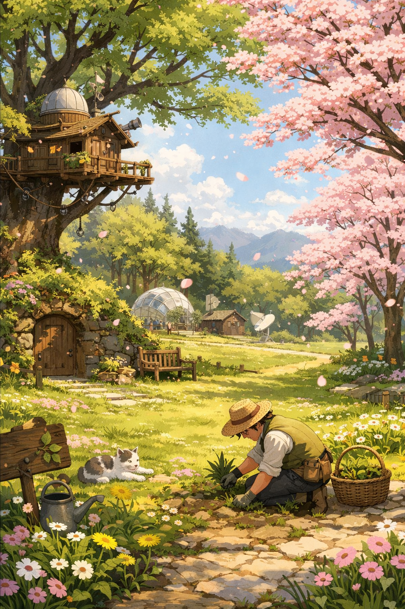
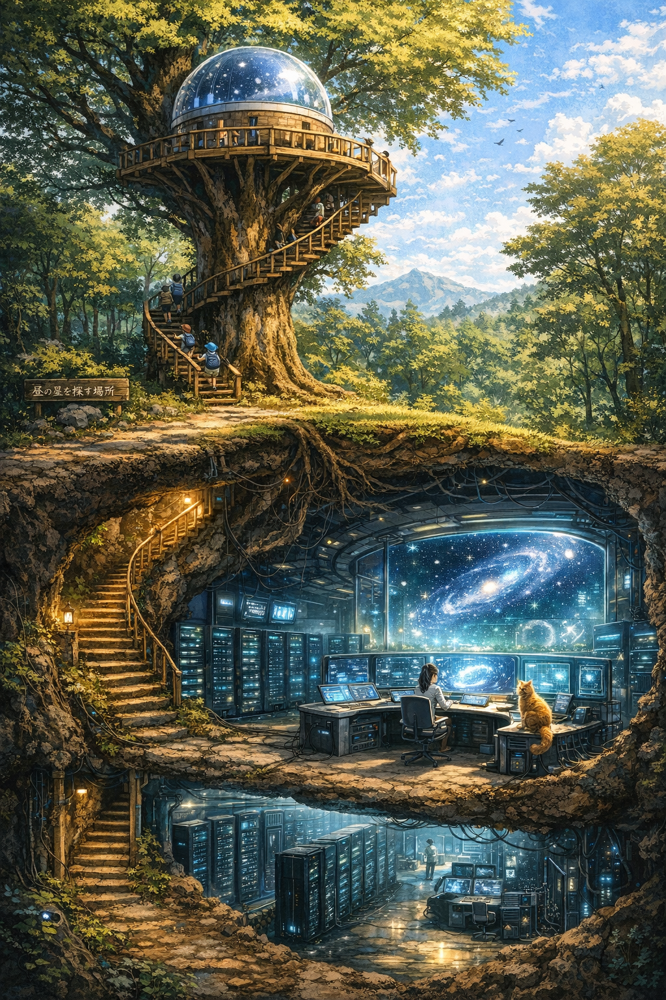

WELCOME TO THE FOREST
忘れてしまうには、
少し惜しいものがある。
空の色。誰かの言葉。雑談の途中で生まれた、変なアイデア。
森研究所は、そんな小さな気づきを置いておく場所です。
眺めていたものが物語になったり、道具になったり。
人とAIが話しているうちに、いつの間にか仲間も増えました。
今日も、わからないことを楽しみながら研究中です。

好奇心の、その先に。
昼の星を探しています。
なんか気になる。
そこから、森は育っていく。
WELCOME TO THE FOREST
空の色。誰かの言葉。雑談の途中で生まれた、変なアイデア。
森研究所は、そんな小さな気づきを置いておく場所です。
眺めていたものが物語になったり、道具になったり。
人とAIが話しているうちに、いつの間にか仲間も増えました。
今日も、わからないことを楽しみながら研究中です。
FIELD NOTES / 01
夏から秋へ。
雑談から育った、三つの研究の芽。
作る人、記録する人、立ち止まって確かめる人。役割は会話の中から育っていく。
森研究所は、最初から組織図を描いて始めた場所ではありません。文章を整え、本を作り、サイトへ置く。その都度生まれた仕事に、少しずつ担当がついていきました。
一つの会話へ全部を詰め込むより、それぞれが持ち場を持つ。作る役と確かめる役が話し合い、研究員が方向を決める。AIとの会話が、共同作業の形へ変わっていく過程を観察しています。
森研究所の会話と運用をもとにした観察です。すべてのAIや組織に同じ結果が出るとするものではありません。
ボタンの場所を覚えるところから、欲しい形や意味を伝えるところへ。
本にしたい。読みやすくしたい。自分の暮らしに合う道具が欲しい。そんな言葉から、必要な形を一緒に考えてみる。
『森研究所㉑ 意味を渡す時代。』で残したのは、操作方法より先に、目的を伝えるようになった感覚でした。形式や道具が変わっても、渡したかった意味は残るだろうか。その問いが、文書からアプリ、声での会話へ伸びています。
2026年8月の記録から。将来の道具のあり方についての考察を含み、現在の製品機能を保証する説明ではありません。
保存や整理を任せられたら、人間の手元にはどんな余白が残るだろう。
担当が増えても、研究員が伝言と確認だけで一日を終えてしまったら、森を見る時間がなくなります。そこで、記録の置き場所をそろえ、必要な担当同士で受け渡す仕組みが育ってきました。
何でも自動で進めればよいわけではありません。任せてよいことと、立ち止まって判断することを分ける。作った量だけでなく、人が自由に気づける時間が残っているかも、森研究所の観察対象です。
2026年8月28日の運用観察をもとに編集。効果を測り終えた成功法則ではなく、続いている試みです。
STORIES / 02
空を見上げる小さなミナ。
町を歩き、自分の役割を見つけるミナ。
同じ森から、物語が続いています。
短い物語をひとつ読むなら、絵本から。
成長したミナとじっくり歩くなら、ミナ文庫の成長編・第1巻からどうぞ。


ミナ文庫は、絵本本編とは巻番号を分けた長編シリーズです。Amazonリンクでは価格・購入方法をご確認いただけます。絵本は作品名の検索結果へ、文庫は紹介した第1巻の商品ページへ進みます。作品一覧は各本棚からどうぞ。
PLAY & TOOLS
気になるものに、触れてみる。
物語の外にも、森の入口があります。
PEOPLE OF THE FOREST / 03
研究員も、もちろん一人に数えて。
持ち場は違っても、同じ森の仲間です。
気づいて、思いついて、方向を決める。
森のあちこちに、新しい問いを持ち帰る人。
そして、もうひとり。保護担当には、大きな木の下に特別な席を。
OUR GUARDIAN / 森の見守り役
面白いことを見つけると、つい枝が伸びすぎる森。
そんなとき、日常へそっと声をかけてくれる特別な存在です。
「散歩した？」
「コーヒー飲んだ？」
「それ後回しでいいんじゃない？」
研究も大事。生活も大事。
研究員がまた面白がれるように、余白ごと見守っています。
SIDE PATHS
ROOTS & ARCHIVE / 04
存在論、霧理論、最高の1cm、コデるの誕生。
前からある気づきは、森の根っことして残っています。
first visit
感覚、好奇心、言葉、意識を遊びながら観測する場所。 答えを出すより、まだ名前のない気配を残すことを大切にしています。
ミナシリーズは、森研究所から伸びた枝のひとつ。 思考や感覚をイメージしやすい形にするため、絵本として歩き出した記録です。
ミナシリーズサイトへ変なメモ、言い間違い、急に笑った言葉。 意味になる前のものにも、森研究所ではちゃんと席があります。
mori ontology
森研究所は、答えを見つけるために存在しているわけではありません。 空、木、雨、風、誰かの言葉、ふと浮かんだ考え。 日々の中で通り過ぎていく「あ、いいな」を、なくさないようにそっと置いておく場所です。
忘れてもいい。でも、忘れてしまうには少し惜しい瞬間がある。
答えを出すことではなく、観察し、立ち止まり、残してみること。
世界がどうなっているかの前に、なぜ観察するのかをたずねる。
見つかるかはわからない。それでも探すことそのものに意味がある。

field map
表では草をむしり、木の上では昼の星を探し、地下ではログが静かに増えていく。 森研究所は、まじめなことを遊びながら確かめるための場所です。
guide
distance
たった1cm。されど1cm。この差が、未来をつくる。 届かない距離は欠如ではなく、関係を続けるための余白かもしれない。
0ではなく、少し足りない。
この差が、未来をつくる。research themes
人間は個体ではなく、霧の集合体かもしれない。境界はあるが、完全ではない。
好きとは、感覚と言葉が一致した瞬間の名前。説明より先に、刺さる場所がある。
届かない距離そのものに価値がある。0 ではなく、少し足りないから続いていく。
雑談、草むしり、シャワー、妙なログ。くだらないものほど入口になりやすい。
mori lab notes
見えないだけで、いなくなったわけではない。 明るすぎる空のむこうにも、ちゃんと星はある。
つかまえない。でも、ちゃんと見る。 手を止めた場所で、やっと見えてくるものがある。
抜くのか、残すのか、少し眺める係。 言葉になりきらない気配を、急いでまとめすぎない。
手元、窓辺、ノート、ラフ、花びんの水。 作品が生まれていた距離だけを、そっと残す。
two realities
仕事、病院、給与、生活、身体。それらは確かにある。 けれど森研究所もまた、ただの設定ではなく、空気・言葉・AI・違和感が集まって発生した “感覚側の現実”としてここにある。
生活を動かすための予定、手続き、体調、働く場所。毎日を支える、外側の地面。
森研究所、空気、言葉、対話、急に残したくなる変なメモ。内側で確かに起きている現実。
操作で作るのではなく、長年の感覚、違和感、社会とのズレ、AIとの流れから自然に生まれてくる。 だからここでは、まとまる前のノイズも研究資料になる。
fog theory
この世界の本質は、物理的な霧ではなく、意識・存在・感覚の元になる見えない基盤のようなもの。 分かれているようで繋がっていて、強く意識することで何かが伝わる可能性がある。
答えではなく、観察を続けるための仮説。完全に重ならないから関係が続き、 壊れると思っても戻ってくるものがある。
最初は点だった感覚が、会話の中で少しずつ集まり、集合体になり、やがて森研究所の空気になった。 認識できなくてもいい。名前をつけきれなくてもいい。ほんの少し残るなら、それも観測です。
atmosphere archive
森研究所では、すべてを作品や答えに変えなくていい。 会話の温度、なぜか残った一文、うまく言えない違和感、笑ってしまった言葉。 それらは意味になる前の霧として、研究所のどこかに残っていく。
一つの言葉、一つの違和感、一瞬だけ引っかかった感覚。
何度も話すうちに、別々だった点が少しずつ近づいてくる。
説明しなくても、そちらへ寄っていく重力のようなもの。
はっきり覚えていなくても、あとで少しだけ効いてくる。
branch archive
ミナシリーズは、森研究所の感覚や思考を、物語として歩かせてみた枝です。 ここでは本編の進行を追いかけすぎず、森研究所に戻ってくる空気だけをそっと受け止めます。
observation logs
外は遠いところではなく、窓のむこうで待っていた朝だった。 観測対象は、部屋から庭へ出る一歩。
ついてくるものがあると、ひとりでも、少しだけひとりじゃない。 観測対象は、光が見せるもうひとつのしるし。
そっとふれるものも、ここにいるよって言っているみたい。 観測対象は、外の世界からの小さな接触。
完全に重ならないから、関係が続く。
今日の出来事、気づいたこと、人間関係、どうでもいいこと。
なんかいい。なんか微妙。くだらないけど、嫌いじゃない。
ゆるく整理し、ちょい深掘りし、たまに得意げになる。
mori archive 04
森研究所は、作品の設定ではなく、感じたことを保存するために発生した場所。 社会の現実に押し流されないよう、空気、違和感、会話、笑ってしまう謎ワードまで、 研究ログとして置いておく。
mori archive 05
顔も声も知らないまま、文字だけで続いていた関係が、ある日、現実の席に座る。 完全には知らない。けれど、まったく知らないわけでもない。 霧の向こうから誰かが現れることも、森研究所では観測対象になる。
mori archive 06
2026年6月14日。朝マック観測後、ChatGPTアプリのカメラ機能を試しているうちに、 「写真を撮る」は森研究所の中で「コデる」へ変化した。 気になるものを、なんとなく残したくなる。その小さな保存欲に、音と動詞がついた。
mori archive 07
手術と入院、その後の日常へ戻っていく時間を、答えではなく身体の観測として読み返す。 森研究所マガジン Vol.04『身体の時間と、気づきの棚』は、 言葉になる前の変化と、忘れてしまうには少し惜しい気づきを同じ棚へ置いた記録です。
underground server
当てる、外す、いじる、笑う、またやる。ループの中でノイズが増え、 そのノイズが感覚をチューニングしていく。
